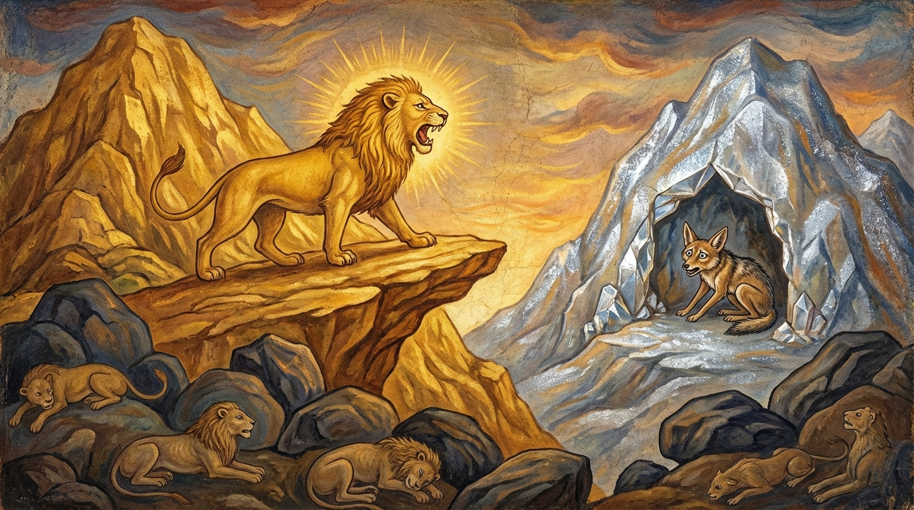

2. සිඟාල ජාතකය (152)
අසමෙක්ඛිතකම්මන්තං යනාදී වශයෙන් එන මේ ධර්ම දේශනාව ශාස්තෲන් වහන්සේ විශාලා මහනුවර කූටාගාර ශාලාවෙහි වැඩවාසය කරන සමයේ, විශාලා මහනුවර වැසි එක්තරා කරණවෑමි පුත්රයෙකු අරබයා වදාළ සේක. ඔහුගේ පියා රජතුමාගේ, අන්තඃපුර බිසෝවරුන්ගේ, රජකුමරුවන්ගේ සහ රාජ කුමාරිකාවන්ගේ රැවුල කැපීම, කෙස් සැකසීම, අන්දම් තැබීම ආදී සියලු කටයුතු කරයි. හෙතෙම ශ්රද්ධාවන්තය, ප්රසන්නය, තෙරුවන් සරණ ගියේය, පන්සිල් සමාදන්ව සිටියේය. අතරින් පතර බුදුරජාණන් වහන්සේගෙන් බණ අසමින් කාලය ගත කරයි. ඔහු එක් දිනක් රජමාලිගාවේ වැඩ කිරීමට යන අතරතුර තම පුත්රයාද කැඳවාගෙන ගියේය. ඒ තරුණ පුත්රයා එහිදී දෙවඟනක් හා සමාන වූ, මනාව සැරසුණු ලිච්ඡවී කුමාරිකාවක් දැක, කෙලෙස් වසඟ වී ඇය කෙරෙහි බැඳුණු සිත් ඇත්තේ, පියා සමග රජ මාලිගාවෙන් නික්මී අවුත් “මේ කුමාරිකාව ලැබුණොත් ජීවත් වන්නෙමි. නොලැබුණොත් මෙහිම මාගේ මරණය වන්නේය” යයි ආහාර වර්ජනය කොට ඇඳ වැළඳගෙන නිදා ගත්තේය.
ඉක්බිති පියා ඔහු වෙත එළඹ “දරුව, නොලැබිය යුතු දෙයට ආසා නොකරන්න. නුඹ පහත් ජාතියක් ඇති කරණවෑමි පුත්රයෙකි. ලිච්ඡවී කුමාරිකාව ක්ෂත්රිය දියණියකි, ජාතියෙන් සම්පූර්ණය (උසස් කුල ඇත්තීය). ඇය නුඹට නුසුදුසුය. නුඹේ ජාතියට හා ගෝත්රයට සමාන වෙනත් කුමාරිකාවක ගෙන එන්නෙමි”යි කීවේය. හෙතෙම පියාගේ කථාව පිළි නොගත්තේය. ඉක්බිති ඔහුගේ මව, සහෝදරයා, සහෝදරිය, පුංචි අම්මා, බාප්පා ආදී සියලුම නෑයෝද මිතුරු මිතුරියෝද රැස්ව කරුණු පැහැදිලි කළ නමුත් ඔහුට ඒ බව ඒත්තු ගැන්වීමට නොහැකි වූහ. ඔහු එහිම වියළී, මැලවී මරණයට පත්විය. ඉක්බිති ඔහුගේ පියා මළසිරුර පිළිබඳ කටයුතු ද මියගිය අය වෙනුවෙන් කරන පිංකම් ද නිමවා, ශෝකය තුනී වූ පසු “බුදුරජාණන් වහන්සේ වැඳපුදා ගන්නෙමි”යි බොහෝ සුවඳමල් හා විලවුන් රැගෙන මහවනයට ගොස් උන්වහන්සේ පුදා වැඳ එකත්පස්ව හුන් කල්හි, “උපාසකය! මෙතෙක් දවසක් නොපෙනී සිටියේ මන්දැ”යි වදාළ විට පුතා පිළිබඳ සිද්ධිය දැන්වීය. එවිට උන්වහන්සේ “උපාසකය! නුඹේ පුතා නොලැබිය යුතු දෙය කෙරෙහි ආසාව උපදවා විනාශයට පත්වූයේ දැන් පමණක් නොවේ, පෙරත් (ඔහු මෙසේම) විනාශයට පැමිණියේ ය”යි වදාරා, ඔහු විසින් ආරාධනා කරන ලද්දේ අතීත කථාව ගෙනහැර දැක්වූ සේක.
අතීතයෙහි බරණැස් නුවර බ්රහ්මදත්ත රජු රාජ්යය කරන කල්හි බෝසතාණන් වහන්සේ හිමාලය ප්රදේශයෙහි සිංහ යෝනියෙහි උපන් සේක. ඔහුට බාල සහෝදරයෝ හය දෙනෙක්ද එක් සහෝදරියක්ද වූහ. සියලු දෙනාම රන් ගුහාවක වාසය කරති. ඒ ගුහාවට නුදුරෙහි රිදී පර්වතයක එක් පළිඟු ගුහාවක් ඇත. එහි එක් හිවලෙක් වාසය කරයි. පසුකලෙක සිංහයන්ගේ මව්පියෝ මිය ගියහ. ඒ සිංහයා තම නැගණිය වූ සිංහ පෝතිකාව රන් ගුහාවෙහි රඳවා ගොදුරු පිණිස නික්මී මස් ගෙනවුත් ඇයට දෙයි. ඒ හිවලාද සිංහ පෝතිකාව දැක ඇය කෙරෙහි බැඳුණු සිත් ඇතිවිය. ඇගේ මව්පියන් ජීවත්ව සිටියදී ඊට ඉඩක් නොලැබුණි. හිවලා ඒ (සහෝදරයන්) සත්දෙනාම ගොදුරු පිණිස ගිය කල්හි පළිඟු ගුහාවෙන් බැස රන් ගුහාවේ දොරටුව ළඟට ගොස් සිංහ පෝතිකාව ඉදිරියේ පස්කම් සැප හා සම්බන්ධ මෙබඳු රහස් කථාවක් කීවේය: “සිංහ පෝතිකාවෙනි! මමද සිව්පාවෙක් වෙමි. නුඹද සිව්පා දෙනකි. නුඹ මගේ බිරිඳ වන්න. මම නුඹේ ස්වාමියා වන්නෙමි. එවිට අපි සමගියෙන් සතුටින් වසන්නෙමු. නුඹ මෙතැන් පටන් ආදරයෙන් මට සංග්රහ කරව” යනුවෙනි. ඇය හිවලාගේ වචන අසා, “මේ හිවලා සිවුපාවුන් අතුරෙන් පහත්ය, නින්දිතය, සැඩොලෙකු හා සමානය. අපි උතුම් රජ කුලයට සමාන ය. මොහු මා සමග මෙබඳු අසභ්ය, නුසුදුසු දෙයක් කතා කරයි. මම මෙබඳු කථාවක් අසා ජීවත් වී කුමක් කරන්නෙම්ද? හුස්ම හිරකරගෙන මැරෙන්නෙමි”යි සිතුවාය. අනතුරුව ඇයට මෙබඳු අදහසක් ඇතිවිය: “මට මෙසේ මියයාම නුසුදුසුය. මගේ සහෝදරවරු එනතෙක් සිට ඔවුන්ට මේ බව කියා මැරෙන්නෙමි”යි (සිතුවාය). හිවලාද ඇගෙන් කිසිදු පිළිතුරක් නොලබා “දැන් මැය මා කෙරෙහි කෝප වී ඇතැ”යි දොම්නසට පැමිණ පළිඟු ගුහාවට වැදී නිදා ගත්තේය.
ඉක්බිති එක් සිංහ පොව්වෙක් මීහරක්, ඇතුන් ආදී සතුන් අතුරෙන් එක්තරා සතෙකු මරා මස් අනුභව කොට නැගණියගේ කොටස ගෙනවුත් “නග! මස් අනුභව කරව”යි කීවේය. “සොයුර! මම මස් අනුභව නොකරමි. මැරෙන්නෙමි”යි කීවාය. “කුමක් නිසාදැ”යි ඇසූ විට ඈ ඒ සිද්ධිය කීවාය. “දැන් ඒ හිවලා කොහිදැ”යි විමසූ විට, ඇය පළිඟු ගුහාවෙහි සිටින හිවලා අහසෙහි සිටින්නේ යයි සිතා, “සහෝදරය! කිම නොදකින්නෙහිද? අර රිදී පර්වතයෙහි අහසෙහි වැතිර සිටින්නේ” යයි කීවාය. සිංහ පෝතකයා රිදී පර්වතයෙහි පළිඟු ගුහාවක් ඇති බව නොදන්නේ, ඌ අහසෙහි නිදන්නේ යයි සිතා “මරන්නෙමි ඌව”යි සිංහ වේගයෙන් පැන පළිඟු ගුහාවට පපුවෙන්ම පහර දුන්නේය. සිංහ පෝතකයා පැළුණු හදවතින් යුතුව එහිම මරණයට පත්ව පර්වත පාමුල වැටුණේය. ඉන්පසු තවකෙක් ආවේය. ඇය ඔහුට ද එසේම කීවාය. හෙතෙම එසේම කොට මරණයට පත්ව පර්වත පාමුල වැටුණේය.
මෙසේ සහෝදරයන් හයදෙනෙකුම මියගිය කල්හි හැමටම පසුව බෝසතාණන් වහන්සේ පැමිණි සේක. ඈ ඔහුටද ඒ කාරණය කියා “දැන් ඒ හිවලා කොහිදැ”යි විමසූ කල්හි, “අර රිදී පර්වත මුදුනෙහි අහසේ වැතිර සිටින්නේ” යයි කීවාය. බෝසතාණන් වහන්සේ කල්පනා කරන්නේ, “සිවලුන්ට අහසෙහි රැඳී සිටිය නොහැක. මේ පළිඟු ගුහාවක නිදන්නෙකු විය යුතුය”යි සිතූහ. හෙතෙම පර්වත පාමුලට බැස මියගිය සහෝදරයන් හයදෙනා දැක, “මොවුහු තමන්ගේ මෝඩකම නිසාත්, විමසීමේ නුවණ නොමැතිකම නිසාත් මෙය පළිඟු ගුහාවක් බව නොදැන හදවතින් පහර දී මළාහු වන්නෝය. නොවිමසා ඉතා ඉක්මනින් කටයුතු කරන්නවුන්ට මෙබඳු දේ සිදුවේ ය”යි පවසා පළමු ගාථාව වදාළේය.
“නොවිමසා කටයුතු කරන්නා වූ, හදිසියේම යමක් කිරීමට පෙළඹෙන්නා වූ තැනැත්තාගේ ඒ ක්රියාවන්, මුව තුළ තැබූ උණු බත් පිඬක් මුව දවන්නාක් මෙන්, ඔහු තවයි (පසුතැවිල්ලට පත් කරයි).”
යනුවෙන් පළමු ගාථාව වදාළේය.
එහි අසමෙක්ඛිත කම්මන්තං තුරිතාභි නිපාතිනං යනු යම් පුද්ගලයෙක් යම්කිසි ක්රියාවක් කිරීමට කැමති වෙයි නම්, එහි දොස් නොවිමසා, සොයා නොබලා, ඉක්මන් වී වේගයෙන්ම වහා ඒ ක්රියාව කිරීමට ඉදිරිපත් වෙයි නම්, පනියි නම්, පිළිපදියි නම්; (දෙයක්) නොවිමසා කරන්නා වූ, හදිසියේම කටයුතු වලට බැසගන්නා වූ ඒ පුද්ගලයාගේ ඒ (අනුවණ) ක්රියාවෝ ඔහු තවති, ශෝකයට පමුණුවති, ක්ලාන්ත කරති. ඒ කෙසේද යත්? උණ්හං වජ්ඣොහිතං මුඛෙ - යම්සේ අනුභව කරන්නෙකු විසින් “මෙය සිසිල්ය, මෙය උණුසුම්ය” කියා සොයා නොබලා, ගිලිය යුතු උණුසුම් දෙයක් මුව තුළට ගනීද, තබයිද, එය (ඔහුගේ) මුවත්, උගුරත්, කුසත් දවයි, ශෝක කරවයි, පීඩාවට පත් කරයි. එමෙන්ම එබඳු පුද්ගලයාගේ ඒ ක්රියාවෝ ඔහු දවති.
මෙසේ ඒ සිංහයා මේ ගාථාව පවසා, “මගේ සහෝදරවරු උපායෙහි අදක්ෂ බැවින් ‘හිවලා මරන්නෙමු’යි ඉතා වේගයෙන් පැන තමන්ම මළාහුය. මම වනාහි එසේ නොකොට පළිඟු ගුහාවෙහි නිදන්නා වූම සිවලාගේ හදවත පලන්නෙමි”යි සිතා, සිවලා නගින බහින මාර්ගය සලකා බලා, ඒ දෙසට මුහුණලා සිට තෙවරක් සිංහනාද කළේය. පොළොව සමග අහස එකනින්නාද විය. පළිඟු ගුහාවෙහි නිදන්නා වූ, (ඒ හඬින්) බියෙන් ත්රස්ත වූ සිවලාගේ හදවත පැළුණි. ඒ හිවලා එහිම මරණයට පත්විය.

බුදුරජාණන් වහන්සේ, “මෙසේ ඒ හිවලා සිංහනාදය අසා මරණයට පත්වූයේ ය”යි වදාරා, අභිසම්බෝධියට පත්ව (බුදු ඇසින් බලා) දෙවන ගාථාව වදාළ සේක.
“සිංහයා සිංහනාදයෙන් පර්වතය ගිගුම් දුන්වීය. පර්වතයෙහි වසන හිවලා සිංහයාගේ ඝෝෂාව අසා, බිය වී, තැතිගැන්මට පත්විය. ඔහුගේ හදවතද පැළුණේය.”
යන දෙවන ගාථාව වදාළ සේක.
එහි සීහො යනු සිංහයෝ සිව්දෙනෙකි:
- තිණ සීහ (තණ කන සිංහයා)
- පණ්ඩු සීහ (පඬුවන් පැහැති සිංහයා)
- කාළ සීහ (කලු සිංහයා)
- කේසර සීහ (ඉතා රතු අත්පා ඇති කේසර සිංහයා)
ඔවුන් අතුරෙන් කේසර සිංහයා මෙහි අදහස් කෙරේ. දද්දරං අභිනාදයි යනු ඒ (සිංහයා) හෙණ පහරවල් (අකුණු) ශබ්දය වැනි වූ භයානක සිංහ නාදයෙන් ඒ රිදී පර්වතය එකනින්නාද කළේය. දද්දරෙ වසං යනු පළිඟු මිශ්ර රිදී පර්වතයෙහි වසන්නාවූ, භීතො සන්තාසමාපාදී යනු මරණ බියෙන් බියපත් වූයේ සිතේ තැති ගැන්මට පැමිණියේය. හදයඤ්චස්ස අප්ඵලී යනු ඒ බිය නිසා ඔහුගේ හදවත පැළුණේය.
මෙසේ සිංහයා හිවලා මරණයට පමුණුවා, සහෝදරවරුන් (මළ සිරුරු) එක් ස්ථානයක සඟවා (තැන්පත් කොට), ඔවුන් මළ බව නැගණියට කියා, ඇය අස්වසා, දිවි ඇති තෙක් රන් ගුහාවෙහි වාසය කොට කම් වූ පරිද්දෙන් (මිය ගොස්) පරළොව ගියේය.
ශාස්තෲන් වහන්සේ මේ ධර්ම දේශනාව ගෙනහැර දක්වා චතුරාර්ය සත්යය ප්රකාශ කොට ජාතක කථාව නිමවා වදාළ සේක. සත්ය දේශනාව අවසානයෙහි උපාසකයා සෝවාන් ඵලෙහි පිහිටියේය. “එකල්හි හිවලා වූයේ මේ කරණවෑමි පුත්රයා ය. සිංහ පෝතිකාව වූයේ ලිච්ඡවී කුමාරිකාවයි. සහෝදරවරු හයදෙනා (දැන්) එක්තරා තෙරවරුන් හයදෙනෙක් වූහ. දෙටු සහෝදර සිංහයා වනාහි මම ම වූයෙමි”යි වදාළ සේක.
දෙවැනි සිඟාල ජාතක වර්ණනාවයි.